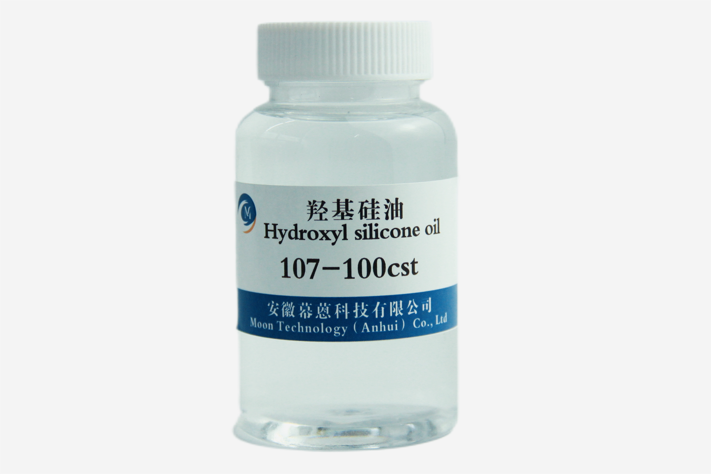

Hydroxy-terminated Polydimethylsiloxane (HO-PDMS-OH)
CAS: 70131-67-8Hydroxy Silicone Oil (HO-PDMS-OH) is a reactive silicone fluid terminated with hydroxyl (-OH) groups at both ends of the polymer chain. This unique structure enables it to undergo condensation reactions with various crosslinkers and coupling agents, making it indispensable for room temperature vulcanizing (RTV) silicone rubber, condensation cure sealants, and polymer synthesis. It is also widely used in textile finishing, leather treatment, and personal care formulations where hydroxyl functionality provides excellent adhesion and film-forming properties.
| Chemical Name | Hydroxy-terminated Polydimethylsiloxane |
|---|---|
| CAS Number | 70131-67-8 |
| Molecular Formula | HO-Si(CH₃)₂-[O-Si(CH₃)₂]n-OH |
| Appearance | Colorless transparent liquid |
| Hydroxyl Content | 0.01% – 10% (customizable per grade) |
| Viscosity Range | 10 – 100,000 mm²/s (107 series: 10-100cSt standard) |
| Density (25°C) | 0.950-0.980 g/cm³ |
| Refractive Index (25°C) | 1.400-1.405 |
| Flash Point | >300°C |
| Packing | 50kg / 200kg drums, IBC 1000kg, or as requested |
Base polymer for one-component and two-component room temperature vulcanizing silicone rubber systems (condensation cure).
Condensation cure sealants for construction, glazing, and sanitary ware applications requiring durable elastic bonds.
Softening and waterproof finishing agent for cotton, silk, wool, and synthetic fabrics with excellent wash durability.
Softening, waterproofing, and gloss-enhancing treatment for natural and synthetic leather goods.
Hair conditioning agents and skin moisturizers providing long-lasting smoothness and shine in cosmetic formulations.
Key intermediate for synthesizing block copolymers, grafted silicones, and specialty functional polymers.